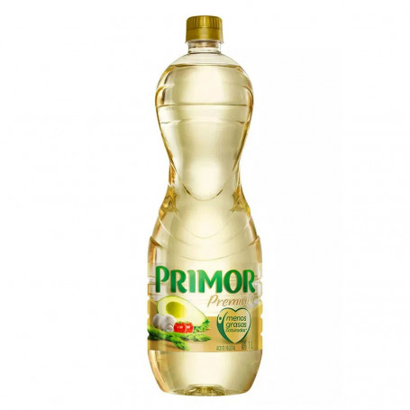

Preparacion de papas fritas
Esta es una preparación para unas deliciosas papas fritas
Ingredientes
- 1Kg de papas fritas
- ½ litro de aceite

- sal al gusto
Preparación
- Lavar y pelar las papas
- Conrtarlas en bastones
- Calentar el aceite
- Freir las papas hasta tener un tono dorado
- Servirlas utilizando poca sal
VER VIDEO DE LA PREPARACIÓN